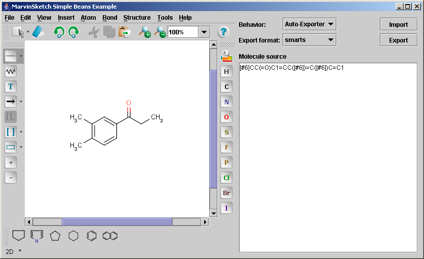

In this example MarvinSketch is used as a JavaBean component. The actual JavaBean class is called MSketchPane.
The main goal of the example is to show how to create and embed the MarvinSketch bean in a JPanel with some additional functionalities such as getting and setting molecules.
A GUI component is created in the example which consists of three major parts:
The String representation of the molecule is called the source of the molecule or simply source.
The image below shows the component that is created:
There are two major operations, export and import. When the Export button is pressed, the source of the current molecule will be set in the text area. The format of the molecule source is determined by the state of a format chooser combo box. Pressing the import button makes the bean read a molecule by converting the string content of the text area to a molecule.
The component has 3 working modes:
The following paragraphs demonstrate the major parts of the
SketchSimple.java code.
sketchPane = new MSketchPane();The complexity rises at using the parameters of the bean since there are many of them. The following examples will show the ones that are the most frequently used.
String molS = sketchPane.getMol(format);
sketchPane.setMol(molS);
The MarvinSketch bean fires a java.beans.PropertyChangeEvent
every time the molecule is modified or replaced, which can be handled by using a java.beans.PropertyChangeListener.
sketchPane.addPropertyChangeListener("mol", new PropertyChangeListener() {
public void propertyChange(PropertyChangeEvent evt) {
if(behavior == EXPORTER) {
exportActionPerformed();
}
}
});